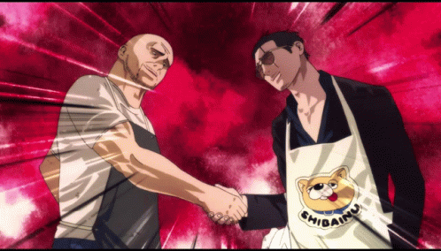
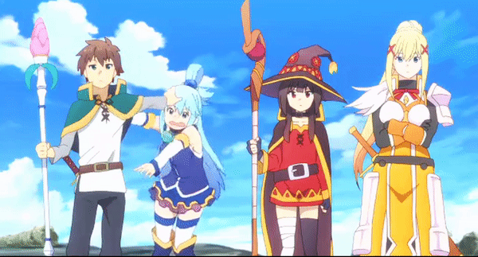

Amagi Brilliant Park
Nosso protagonista, Kanie Seiya, é convidado pela bela e misteriosa nova aluna da escola a ir a um parque de diversão. Nele, ele conhece Latifa, que é princesa além de gerente do parque. Ela o pede para ajudar na gerencia do infame “decepcionante parque de diversão do subúrbio de Tóquio”.

Baka To Test To Soukanjuu
A História gira em torno de Yoshii Akihisa. Ele entra na Academia Fumizuki, uma escola que implantou um sistema diferente para dividir seus alunos: suas classes são decididas de acordo com seu resultado em um exame realizado antes do início do ano letivo, separando-os em classes de “A” a “F”.

Chuunibyou Demo Koi Ga Shitai
Yūta Togashi é um menino que, durante o ensino fundamental, tinha "delírios adolescentes" (chūnibyō, conhecida como "doença da oitava série"), acreditando ser o "Mestre das Chamas Negras" e se afastando de seus colegas. Agora, no ensino medio, ele quer esquecer do seu passado e viver um vida normal.

Gokushufudou
Conta a história do dia a dia de um lendário membro da Yakuza cujas façanhas incríveis ainda são comentadas no submundo, mas que agora passa os dias cuidando da casa.
Grand Blue
Conta a história de Kitahara Iori, ele, que ingressa na faculdade perto do mar na cidade de Izu, emocionado por um novo começo, ele se muda para casa do seu tio, uma loja de mergulho chamada “Grand Blue.” Lá, ele encontra um lindo oceano, belas mulheres, e os homens que gostam de mergulho e álcool.

Himouto Umaru-chan
Conta a história de Umaru Doma, uma estudante que mora com seu irmão mais velho, Taihei. Na escola, Umaru aparenta ser uma estudante ideal por causa da sua boa aparência, das suas notas e dos seus vários talentos.

Danshi Koukousei No Nichijou
Conta a história do dia-a-dia da vida de três estudantes (Tadakuni, Hidenori e Yoshitake) de uma escola só para garotos. Durante os episódios são mostradas mini-histórias de suas cômicas e hilárias situações cotidianas.

Konosuba
Conta a história de Kazuma Satō, um adolescente japonês hikikomori e NEET, após morrer prematuramente e embaraçosamente, conhece uma deusa chamada Aqua, que se oferece para reencarnar-lo em um mundo paralelo com elementos de MMORPG controlado por um rei demoníaco, onde ele pode viver aventuras e batalha contra monstros.
Murenase! Seton Gakuebn
Em uma escola de animais, onde os currículos dos alunos se concentram na em "sobrevivência do mais apto". O humano solitário da classe, Jin Mazama (que odeia animais), se apaixonam por Hitomi Hinose, uma garota solitária da classe.

Hayate No Gotoku
Conta a história sobre um garoto que começa um novo emprego como mordomo e os eventos que ele experimenta com o emprego